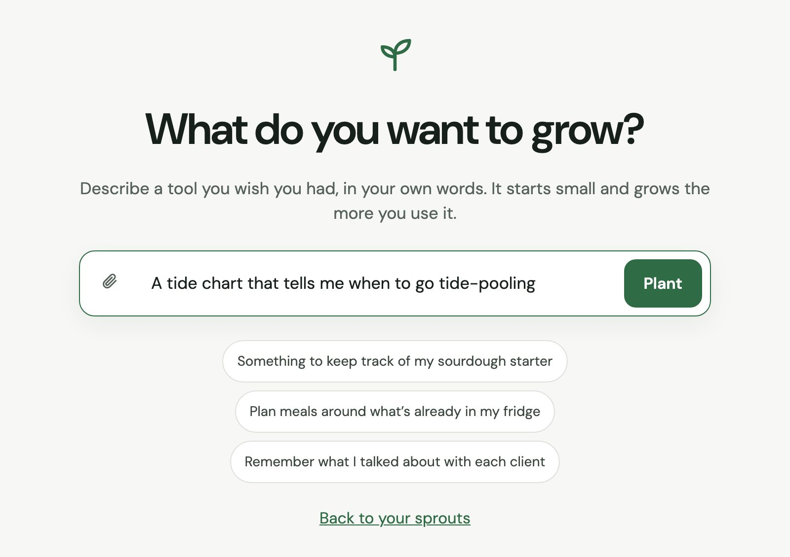

1
Say what you want to grow
One sentence is enough. Sprout asks a couple of friendly follow-up questions (never about technology), then how it should feel: calm, professional, organic or quirky, in your own words if you like. You can add files too: art for a game, a spreadsheet of data, a picture of what you have in mind.

Which beach should it follow, and how far ahead do you plan?
Just one beach. A few days ahead is plenty.
CalmProfessionalOrganicQuirky